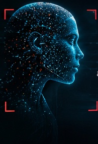

ملف القضية رقم ٠٠١
المشتبه به الخفي
التقرير: شيء ما يعمل بصمت في تفاصيل الحياة اليومية؛ يتوقع ويرتّب وينبّه، ولا يظهر ولا يُسمّى. لا صورة له ولا اسم. المطلوب كشف هويته قبل إغلاق القضية.
التقرير: شيء ما يعمل بصمت في تفاصيل الحياة اليومية؛ يتوقع ويرتّب وينبّه، ولا يظهر ولا يُسمّى. لا صورة له ولا اسم. المطلوب كشف هويته قبل إغلاق القضية.
ملاحظات المحقق: أرى الذكاء الاصطناعي كعين رقمية تستطيع اكتشاف الأنماط التي قد لا نلاحظها بسهولة. يتعلم من البيانات، ويستخدم ما تعلمه لتحليل المعلومات وتقديم توقعات أو اقتراحات. لكنه ليس عقلًا بشريًا يعرف كل شيء؛ فقد يخطئ، وتبقى مسؤولية التفكير والتحقق واتخاذ القرار للإنسان.
افحص الأدلة الثلاثة لكشف هوية المشتبه به.
فحص الدليل
أدهشني أن الذكاء الاصطناعي اللغوي قد يقدّم إجابة مرتبة وواثقة تتضمن مراجع لا وجود لها، لأنه يتنبأ بالكلام المحتمل وليس قاعدة معلومات مؤكدة. ثقة الأسلوب لا تعني صحة المعلومة.
إفادة المشتبه به (مثال مُختلَق للتوضيح)
«وفق دراسة للدكتور خالد عام ٢٠١٨ في مجلة التقنية الذكية، فإن ٩١٪ من الأنظمة لا تخطئ.»
قرار المحقق؟

المشتبه به الخفي هو…
تقنية تتعلم الأنماط من البيانات، وتستخدمها لتقديم توقعات واقتراحات في طرقنا ومنازلنا والرعاية الصحية.
إنه شريك يساعدنا على إنجاز المهام واتخاذ قرارات أفضل، وتبقى المراجعة والمسؤولية للإنسان.
اكتشفتُ أن الذكاء الاصطناعي ليس بطلًا خارقًا ولا شريرًا، بل شريك خفي يعمل في طرقنا وبيوتنا ومستشفياتنا، يتعلم من الأنماط ويساعد على القرار. لكنه قد يخطئ، ويبقى دوري أن أراجع وأتحقق وأقرر.